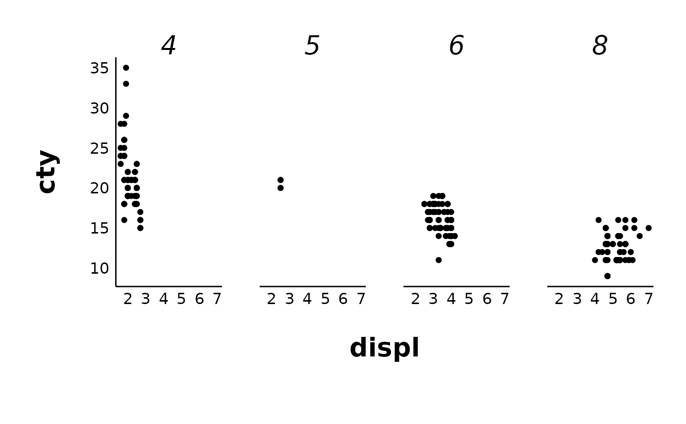

This is a modified version of patchclampplotteR_theme() that is optimized for plots produced with make_facet_plot(). It features large, easy-to-read axis labels and titles for individual facets, and margins that allow for easier readability.
See also
patchclampplotteR_theme() for the original theme and make_facet_plot().
Examples
ggplot2::ggplot(ggplot2::mpg, ggplot2::aes(displ, cty)) +
ggplot2::facet_grid(cols = ggplot2::vars(cyl)) +
ggplot2::geom_point() +
patchclampplotteR_facet_theme()
